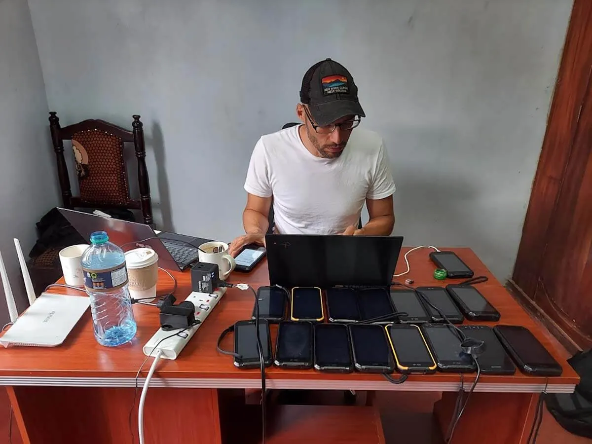

I'm a geographer and technologist with over a decade of experience supporting Indigenous and other communities in mapping and monitoring their lands, and building digital tools that increase self-determination and autonomy.
My professional experience includes fieldwork with communities throughout the Amazon, Caribbean, North America, East Africa, and Oceania, and steering the direction of several digital applications and platforms, including Terrastories, Earth Defenders Toolkit, and Native Land Digital.
I hold a Masters degree in Anthropology from the University of North Carolina at Chapel Hill, and a Masters degree in International Administration from the University of Miami. I also have two decades of experience as a web developer, and a background in archives.
I am currently the Director of the Indigenous Guardianship Program at Conservation Metrics, where we are co-creating a new Indigenous data sovereignty platform called Guardian Connector, and providing technical support for Indigenous community organizations across the globe.
On occasion, I also take on freelance work, including contracts to build custom web applications and serve as a technical advisor or expert in programmatic areas. Most of these contracts have been related in some way to my work with Indigenous communities, participatory mapping, or land rights. I have also given speaking engagements at conferences and public events. If you're interested in working with me, please reach out.
You can find out more about my work here:
LinkedIn GitHub Bluesky Mastodon
Here are a few select pieces I'm proud to have created or contributed to in recent years:
In addition to my work in Indigenous rights, participatory mapping, conservation and technology, I am also a photographer. Check out my visual work here: